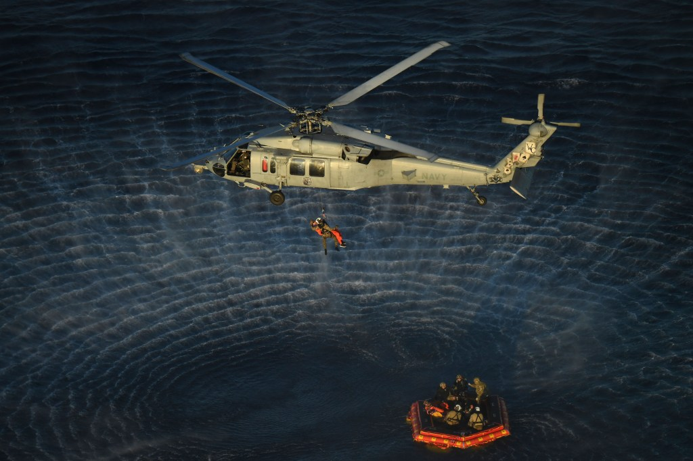

Il lancio dura pochi minuti; la missione dipende da anni di lavoro a terra. A Kennedy il veicolo deve essere integrato, verificato, trasferito e rifornito. La torre mette in contatto una macchina destinata a partire con impianti che devono restare sul posto e funzionare ancora.
La rampa è un sistema
LC-39B ospita le partenze della fase iniziale Artemis. Il complesso non è soltanto una superficie resistente al calore. Servono alimentazione, comunicazioni, linee dei propellenti, accessi e misure per la sicurezza. Il veicolo e gli impianti devono superare insieme una sequenza di verifiche.
Un problema nel trasferimento dei fluidi può rinviare il volo anche quando il razzo è strutturalmente pronto. Il propellente deve arrivare nelle condizioni richieste e le procedure devono gestire cambiamenti di pressione e temperatura. Accelerare il conto alla rovescia non modifica questi vincoli.
Dal capannone al ritorno
Il conto alla rovescia non è una promessa
La presenza di una finestra non obbliga a partire. Condizioni meteo, impianti o anomalie possono richiedere uno stop. La distinzione fra rinvio e fallimento è importante: non effettuare un lancio che non soddisfa i criteri è una funzione del sistema di sicurezza.
Il costo di un rinvio resta reale. Personale, logistica e calendario devono essere riorganizzati. Ma confrontarlo con il costo di un’anomalia in volo evita di trasformare la pressione del pubblico in un requisito tecnico.
Il centro di controllo
Il lavoro continua dopo la salita. Gli apparati trasmettono dati, i gruppi controllano risorse e traiettorie e l’equipaggio deve poter conoscere le condizioni della nave. Il viaggio lunare aggiunge distanze e geometrie che rendono la rete di comunicazioni una parte della missione.
La capacità di riconoscere una situazione e scegliere un’alternativa non nasce durante l’emergenza. Viene preparata attraverso simulazioni e criteri. Le prove a terra hanno valore proprio quando fanno emergere interazioni che il singolo sottosistema non mostra.
Preparare il recupero prima della partenza
Il punto di ammaraggio e il dispositivo di recupero richiedono pianificazione. La capsula deve essere avvicinata in condizioni sicure, l’equipaggio assistito e il veicolo recuperato per l’analisi. L’operazione mette insieme NASA e risorse militari senza trasformare una missione civile in un’azione militare.

Il recupero di Artemis II porta nella storia la conclusione più importante di un volo umano: le persone tornano. La calma delle operazioni dopo l’ammaraggio è il risultato di una preparazione che le immagini del lancio non raccontano.
Fonti pubbliche e tracce
- NASA, Artemis I. Missione del 2022, senza equipaggio.
- NASA, Artemis II: Image and Video Recap. Fotografie documentarie: crediti distinti per ciascuna immagine.
- NASA, Splashdown: Orion Returns, 11 dicembre 2022. Risultati della missione e recupero.